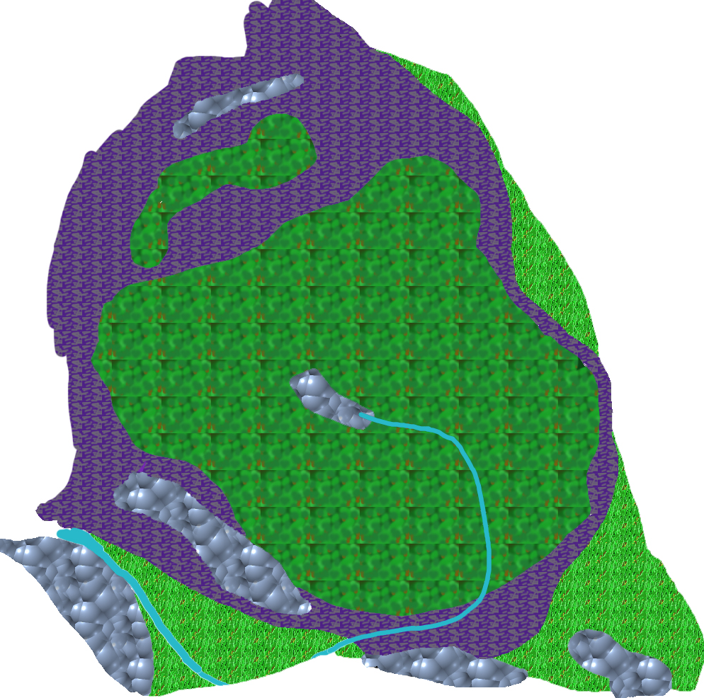

back
Dead Forest

The Dead Forest used to be a magical forest inhabited by elves long ago. It was a magical and peaceful land where the great Tree of life standing hundreds of meter tall was a landmark of the continent. 500 years ago, a powerful wizard created a portal that opened up to the demon realm. Powerful demons began entering the land and killed all the elves. If it was not enough, a powerful demon eventually came through the portal and with the help of a powerful necromancer, he cursed the land around him. Even after 500 years, the curse is still present and the land has been corrupted beyond saving, the region has henceforth been known as the Dead Forest.
Cities: There is a single special village in the region, named the Giant Village. It is a village where peaceful Giant used to live...500 years ago. Now their colossal skeleton and corrupted souls wander the area and terrorize anyone who dares venture in the region.
Landmark:
The one major landmark of this land is the rotten and corrupted remain of the Tree of Life that used to stand in the middle of the woods. It has been corrupted and now it hosts evil creatures that feed on its demonic energy. What used to be a symbol of Life in the region as become the Rotten Tree that represent the state of the land.
Environment:
The Dead Forest is a peculiar place, for the ground itself is like nothing you could have seen in this world. It is dark, radiating a purple hue and anyone walking on it feels nauseous and dizzy. There is a putrid smell to the region, you feel your body starts to rot faster and there is not a living thing in sight. There is a suspicious fume coming out of the ground sometimes and it makes it difficult to see properly and create mirages and illusions in the distance. Sometimes you can find the carcass of a dead fiend on the ground, mauled by some devilish beast and hear terrible sounds in the distance without being able to properly locate where it comes from. It is hell. The Forest itself is corrupted with the same radiating purple hue and there is demonic power at work inside of it.
Wildlife and Monsters:
There is no wildlife here, only monsters. Devils, Hell spawns, undead, Giant Skeleton and Demons if you are unlucky.